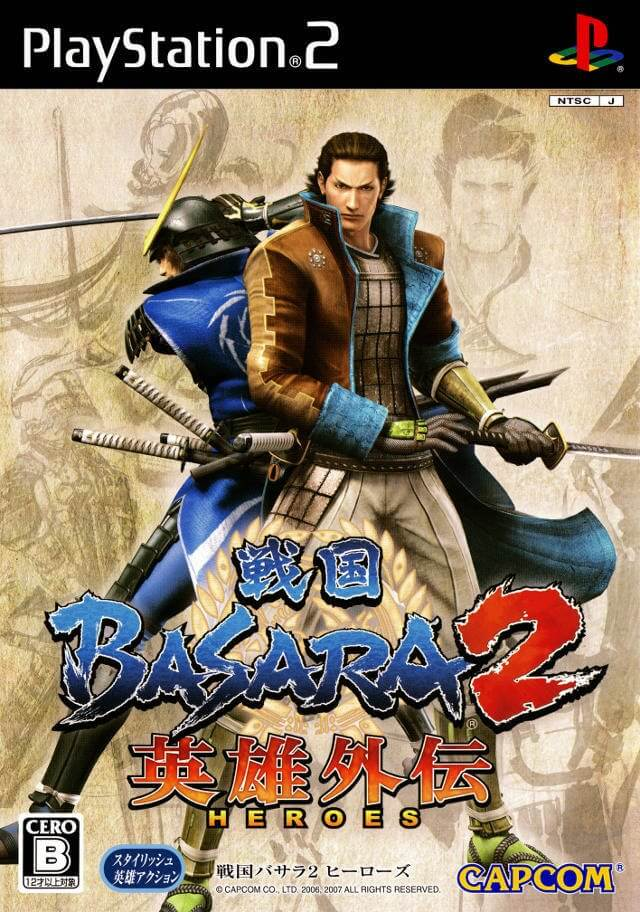
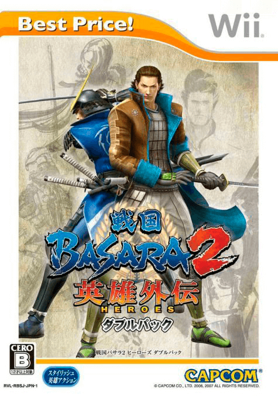

Terjemahan Bahasa Indonesia — pilih platform kamu.

SLPM-66848 · emulator (PCSX2/Android) & PS2 asli (OPL)

RBSJ08 · Dolphin (PC/Android) & Wii asli (USB Loader)
Patch ini GRATIS dan tidak berisi game — kamu wajib punya ISO/disk hasil dump sendiri. · GitHub · Dukung di Saweria ☕